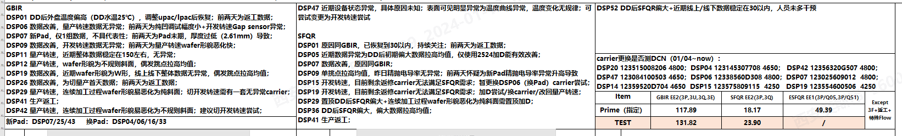

主打就是记录
2024年1月12日 20:41:44 Daily Logs
好好工作
职级晋升的报告
一到年末的时候就开始纠结，不知道到底应该写啥。年末写的是年终总结，但是今年的总结就是职级晋升的答辩报告。
答辩，也是要有东西的啊。
转眼来到公司已经一年多时间了，时间倒是过得很快。
去年的十一月初来到公司，对工艺进行了简单学习之后就开始快速的上手调机，从DSP设备调控入手下，学习平坦度的控制。
首先，学习了解了平坦度是什么，需要怎么把控，怎么控制平坦度。
其实刚开始对于设备也是了解甚少，但是一步步的，从工艺入手，着手学习大家的经历，上手了解，了解每天的日常工作，学习调机，直接上手工作。慢慢的也就熟悉了。
想想去年的我，这个时候，开始调机。
调机向来是个系统活，需要关注很多方面，首先是群里出的数据，单纯的平坦度数据就有好多个点可以研究，比如GBIR/SFQR/ESFQR/ESFQD等等，这些只是单纯的看结果的话真的很简单，但是真的要研究透的话害的花费一番功夫。
后来的我才知道，原来这一切只有到了去年的五月份，这些才可以进一步的了解清楚，而有些人，很可能很快就已经了解到了这些。
GBIR ，对于一个参数而已其实也只是单纯的一个表示平坦度的特征量而已。
G Global 整体的 B Back 以Wafer背面作为基准的 I Idea 理想平面 R Range表示一个基准的平面
将Wafer拟合成为一个理想的平面，取最高点和最低点的差异，然后计算得到值就行。
PPT上的定义往往就是很简单，在实际应用中，也是很简单的，单纯的看一个LSW或者WS2+测试的图就可以得到具体的结果
上面的一切都就有了，But
LSW和WS2+作为两个基础的测量设备，其实说真的也有很多可以研究的点，但是自己对这个就真的没有研究的很透料，所以也就说不上啥来。
LSW上可以测试的数据点
然后就是工艺相关的了
TMM/TMS那是个规则的游戏，我们向来只需要按照规则来玩就行。
TMMs 匹配设备Mean值 S STD 标准差 专门用于分析机差的玩意
匹配设备差异 确认过程异常点
自从去年六月份开始分析这个以来，感觉经常在搞这个，但是还是没有一个很清楚的头绪
PPT咋写 真的没有思路啊
看着别人写的一直很有思路，但是自己弄就是没想法啊
不记事是眼下自己的一个很大的问题点，明明自己好像做过了一些事情，但是就是没有一个清晰的印象啊
看看给小白发的报告，是自己唯一能够拿的出手的东西了。
不像马驰和王浩，同样手头上也做了一些事情，能拿的出来的东西有很多，对于答辩很有利啊
核心能力
感觉很多都会，但是没法描述的那种
暗夜中的那些精灵啊
一切感觉简直是太恐怖了
日报
前三天的日报

昨天

-1

-2

-3

我的日报
一些没有意义的文字
困困哒
整天浑浑噩噩的折页不想动，那也不想动
烦死了，一个个的事情就没完过
妈呀，又困了
 TMM/TMS更新最优方案
TMM/TMS更新最优方案
1. 打开TMM/TMS Excel
2. 打开SPC 软件 输入GBIR 选择时间，开刷
3. 导出 打开/不打开都行
4. 输入SFMX 选择时间，开刷
5. 导出
6. 粘贴GBIR到SFMX旁边
7. 分列 文本列格式化为数字列 增加DSP08 和其余数据
9. 打开TMM表格，昨天列上复制插入新列
10.全部修改标题
11.确认粘贴数据 二次确认数据准确性
12.保存 复制粘贴为图片
13.打印 关闭
突然间刷到一本开头看起来非常惊艳的小说
稳住别浪
但是突然间才发现自己也有一本弃坑的小说
作者大大也都是烂尾的人了
也在纠结要不要把那个故事给继续下去
不像别人的故事那样描述的及其动人
但是自己的东西说起半天肯定也是自己的嘛
哎~~~
想想就是心累